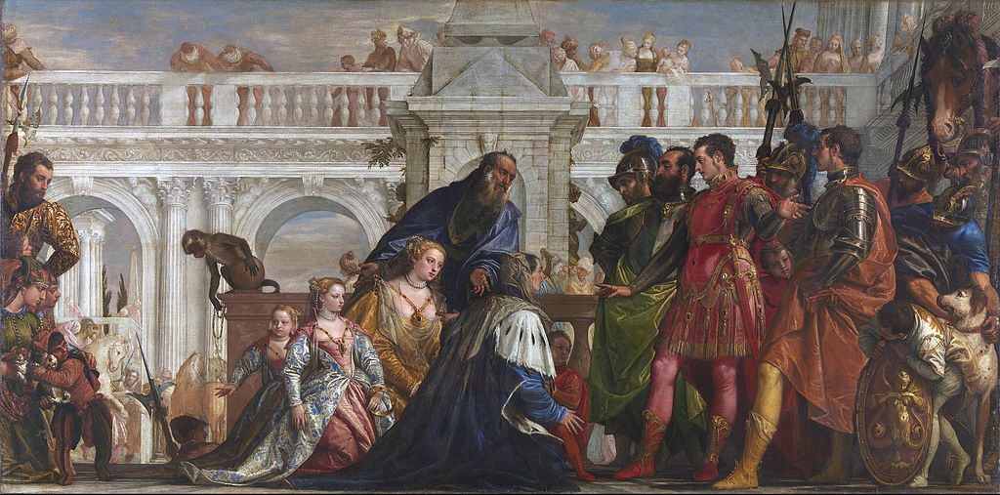

<head>
<meta charset="UTF-8" />
<meta name="keywords" content="drawing, painting" />
<meta name="description" content="drawings by Sunjy" />
<title>Sunjy</title>
<link rel="shortcut icon" type="image/x-icon" href="../../mImages/mCommon/favicon.ico" media="screen" />
<link rel="stylesheet" type="text/css" href="../../mCsses/mCommon/mCssA.css" />
<link rel="stylesheet" type="text/css" href="../../mCsses/mCommon/mCssB.css" />
<link rel="stylesheet" type="text/css" href="../../mCsses/mCommon/mCssC.css" />
<link rel="stylesheet" type="text/css" href="../../mCsses/mCommon/mCssD.css" />
<link rel="stylesheet" type="text/css" href="../../mCsses/mContent/mCssA.css" />
<link rel="stylesheet" type="text/css" href="../../mCsses/mContent/mCssB.css" />
<link rel="stylesheet" type="text/css" href="../../mCsses/mContent/mCssC.css" />
<link rel="stylesheet" type="text/css" href="../../mCsses/mContent/mCssD.css" />
</head>
<script type="text/javascript" src="../../mScripts/mContent/mContentAA.js" /></script>
<script type="text/javascript" src="../../mScripts/mContent/mContentAB.js" /></script>
<script type="text/javascript" src="../../mScripts/mContent/mContentAC.js" /></script>
<script type="text/javascript" src="../../mScripts/mContent/mContentAD.js" /></script>
<script type="text/javascript"></script> 
<script type="text/javascript">
document.write('<div class="mImgAbsolute"></div>');
/*
document.write('<p class="mFontSizeBColor" />From a white paper...</p>');
document.write('<table class="center"><tr><td>');
document.write('');
document.write('</td></tr></table>');
*/
</script>


<script type="text/javascript">
document.write('<p class="mFontSizeBColor" />The Family of Darius before Alexander</p>');
document.write('<p class="mFontSizeSColor" />“The Family of Darius before Alexander” by Paolo Veronese depicts Alexander the Great with the family of the Persian king he had defeated in battle. Other artists had rarely depicted the story in this painting before Veronese.<br><br>The story is centered on the events in 333 BC when Alexander defeated King Darius III’s army. Darius panicked and abandoned his army and family to narrowly escaped capture.<br><br>Alexander’s forces quickly captured his wife, mother, and his daughters, who were left behind by Darius.<br><br>Alexander is reputed to have displayed unexpected respect and honor to his enemy’s family after his victory. According to Plutarch:<br><br>“he treated these illustrious prisoners according to their virtue and character.”<br><br>This painting focuses on a misunderstanding that occurred when Alexander first went to the women’s tent, accompanied by his childhood friend. Darius’s mother mistook the taller friend for Alexander and knelt before him to plead for mercy.<br><br>When her error became obvious, Alexander magnanimously said that his friend was Alexander as well. This diplomacy minimized embarrassment over her confusion and served as a compliment to his friend.<br><br>The composition of this painting preserves this ambiguity and confusion. Is Alexander, the young man in red, who gestures as if in the act of speaking while referring to the man at his left? Or is Alexander, the man in the armor?<br><br>The uncertainty about their correct identification is evidence of Veronese’s genius in composition and telling a story in this painting.<br><br>While honoring the theme of the story, Veronese used artistic license with his presentation of the narrative. The key areas of historical inaccuracy include:<br>•the meeting is shown to occur in a stately hall, not a tent as per accounts by classical writers;<br>•the splendid wardrobes shown are that of Venice from Veronese time and not ancient Greece or the Far East;<br>•Veronese had inserted portraits of his contemporaries into the painting, as was customary in Venetian history painting;<br>•the architectural geometry is reminiscent of Venice and not ancient Greece or the Far East;<br><br>When the National Gallery purchased this painting, its price was debated in the House of Commons of the United Kingdom in 1857 when one Lord, unhappy with the price negotiated, attacked the art as a “second-rate specimen.”<br><br>But Henry James wrote in 1882:<br><br>“You may walk out of the noon-day dusk of Trafalgar Square in November,<br> and in one of the chambers of the National Gallery,<br> see the family of Darius rustling and pleading and weeping at the feet of Alexander.<br> Alexander is a beautiful young Venetian in crimson pantaloons,<br> and the picture sends a glow into the cold London twilight.”<br></p>');
document.write('<table class="center" /><tr><td>');
document.write('<br>The story is centered on the events in 333 BC when Alexander defeated King Darius III’s army. Darius panicked and abandoned his army and family to narrowly escaped capture.<br><br>Alexander’s forces quickly captured his wife, mother, and his daughters, who were left behind by Darius.<br><br>Alexander is reputed to have displayed unexpected respect and honor to his enemy’s family after his victory. According to Plutarch:<br><br>“he treated these illustrious prisoners according to their virtue and character.”<br><br>This painting focuses on a misunderstanding that occurred when Alexander first went to the women’s tent, accompanied by his childhood friend. Darius’s mother mistook the taller friend for Alexander and knelt before him to plead for mercy.<br><br>When her error became obvious, Alexander magnanimously said that his friend was Alexander as well. This diplomacy minimized embarrassment over her confusion and served as a compliment to his friend.<br><br>The composition of this painting preserves this ambiguity and confusion. Is Alexander, the young man in red, who gestures as if in the act of speaking while referring to the man at his left? Or is Alexander, the man in the armor?<br><br>The uncertainty about their correct identification is evidence of Veronese’s genius in composition and telling a story in this painting.<br><br>While honoring the theme of the story, Veronese used artistic license with his presentation of the narrative. The key areas of historical inaccuracy include:<br>•the meeting is shown to occur in a stately hall, not a tent as per accounts by classical writers;<br>•the splendid wardrobes shown are that of Venice from Veronese time and not ancient Greece or the Far East;<br>•Veronese had inserted portraits of his contemporaries into the painting, as was customary in Venetian history painting;<br>•the architectural geometry is reminiscent of Venice and not ancient Greece or the Far East;<br><br>When the National Gallery purchased this painting, its price was debated in the House of Commons of the United Kingdom in 1857 when one Lord, unhappy with the price negotiated, attacked the art as a “second-rate specimen.”<br><br>But Henry James wrote in 1882:<br><br>“You may walk out of the noon-day dusk of Trafalgar Square in November,<br> and in one of the chambers of the National Gallery,<br> see the family of Darius rustling and pleading and weeping at the feet of Alexander.<br> Alexander is a beautiful young Venetian in crimson pantaloons,<br> and the picture sends a glow into the cold London twilight.”<br>" />');
document.write('</td></tr></table>');
</script>


